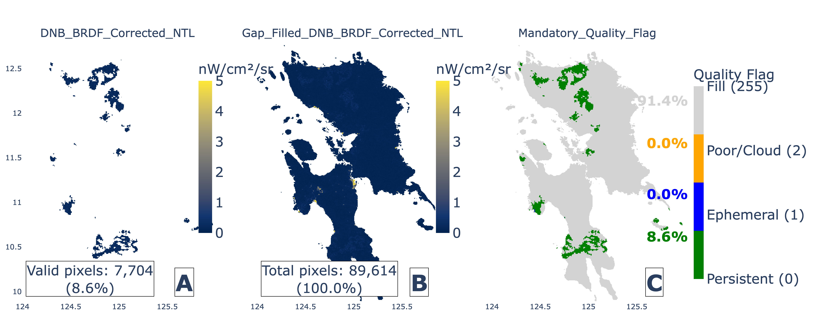
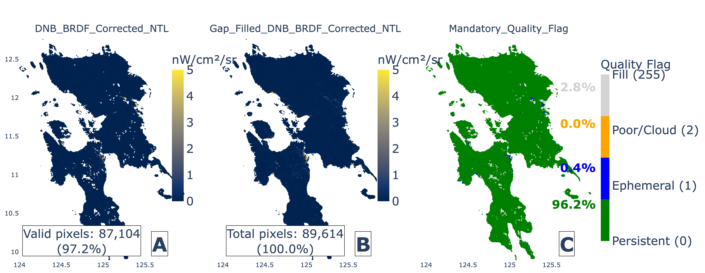
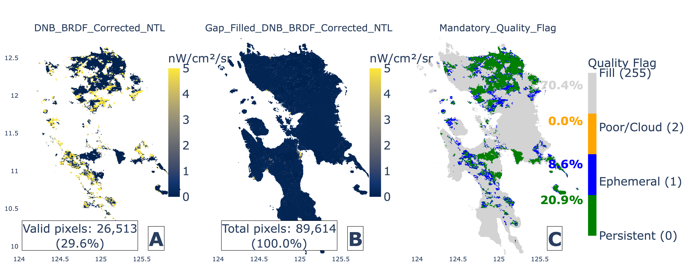

The story in one sentence
Nighttime lights can reveal disruption and recovery after disasters, but only when the
satellite actually observed enough valid pixels to make the signal trustworthy.
Key takeaway:
A smooth satellite time series is not automatically reliable. In tropical disaster settings,
observability must be checked before nighttime lights are interpreted as evidence of power recovery.
How to read the evidence
The figures below are interactive. You can zoom, pan, hover, and open each figure in a larger view.
Read them as evidence layers, not as a single definitive answer.
Direct light signal
DNB-BRDF radiance is the directly observed nightlight signal. A drop may indicate
outage, damage, evacuation, or reduced activity.
Gap-filled signal
Gap-filled radiance can look continuous because it may use previous observations.
It is useful context, but not always fresh evidence.
Spatial completeness
Spatial completeness measures how much of the area was validly observed.
Low completeness means the signal should be treated cautiously.
Visual evidence from the satellite record
These daily panels show how direct radiance, gap-filled radiance, and quality flags can tell
different stories during a disaster period.



Interactive reliability diagnostics
1. Reliability filter for Samar–Leyte
This figure shows how the nighttime light signal changes when days with poor spatial
completeness are filtered out. It is the clearest way to show why reliability screening matters.
What to look for
Check whether the signal changes when stricter valid-pixel thresholds are applied.
Why it matters
A disaster signal should not be interpreted if it is mostly driven by missing or poor-quality observations.
Open full screen
2. POI dashboard around Typhoon Haiyan
This dashboard compares urban centers, municipal centers, and non-settlement areas.
It shows that location and settlement type strongly affect how interpretable the signal is.
What to look for
Urban areas should generally show clearer and more stable signals than dark or rural areas.
Why it matters
The same satellite product can be useful in one place and noisy in another.
Open full screen
From satellite lights to electricity recovery
3. NGCP subgrid electricity load
Electricity load provides an independent ground-based reference. This figure shows
subgrid-level load dynamics across the Visayas.
What to look for
Compare the timing of drops and recovery across subgrids.
Why it matters
If nighttime lights track electricity load, they can provide spatial context to power-system recovery.
Open full screen
4. Samar–Leyte nighttime lights versus electricity load
This figure compares normalized nighttime lights with electricity load. Strong co-movement
suggests that the satellite signal is capturing real electricity-system dynamics.
What to look for
The colored nighttime-light curves should move with the black electricity-load curve.
Why it matters
Alignment is strongest when the signal is drawn from reliable observations and appropriate settlement masks.
Open full screen
Can the method transfer across regions?
5. Cross-subgrid transferability summary
This summary tests whether the same reliability-qualified approach works across
Bohol, Cebu, Negros, Panay, and Samar–Leyte.
What to look for
Urban-focused masks are often selected, but the best spatial completeness threshold varies by subgrid.
Why it matters
The method is transferable, but not as a one-size-fits-all threshold.
Open full screen
6. Regional comparison by settlement group
This figure compares nighttime light dynamics across regions within the same settlement hierarchy.
What to look for
Urban cores should generally show stronger and more stable co-movement than rural groups.
Why it matters
Settlement structure controls how much of the electricity recovery signal is visible from space.
Open full screen
What stakeholders can take from this
For disaster agencies, infrastructure planners, energy analysts, and resilience researchers,
this work provides both a caution and an opportunity.
The caution is that nighttime lights should not be interpreted blindly. Cloud cover,
data gaps, and low-light conditions can produce misleading signals.
The opportunity is that, with reliability screening, nighttime lights can become an
independent layer of evidence for identifying where disruption and recovery may be visible from space.